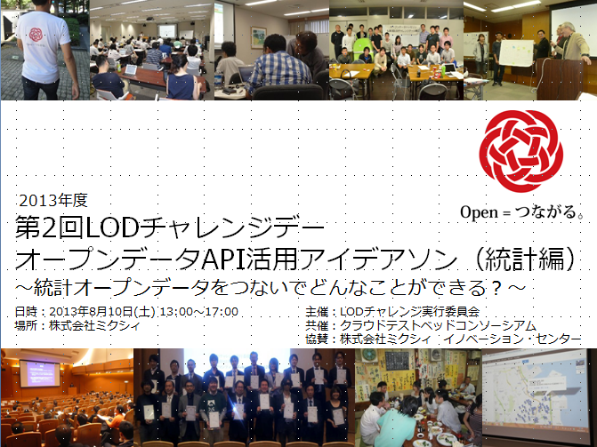

カテゴリー： ‘イベント案内’
【参加募集】第4回LODチャレンジデー ～「つながるLODチャレンジデー」を考えるアイデアソン～（9/14，東京目黒）
今年度のLODチャレンジは、「つながる」を大きなコンセプトとして掲げています。そこで、今回のLODチャレンジデーでは、このコンセプトの１つの実現の形として「つなげるLODチャレンジデー」をテーマに、LODチャレンジ主催イベントの成果として出たアイデアや、一昨年、昨年のLODチャレンジ応募作品をつなげて意見交換を行う「LODサロン」を実施します。
具体的には、下記のようなテーマ毎にグループ分かれてアイデアを出し合う「アイデアソン」を実施します。興味のあるグループに参加して、ディスカッションと交流を楽しみましょう！
（１）ハッカソンのデザインをハッカソンする
（２）LODチャレンジデーをつなげるハッカソン
（３）LODチャレンジへの応募作品をつなげる
（４）科学データを「つなげる」アイデアソン
皆さまからのお申し込みをお待ちしております。
第4回LODチャレンジデー：LODサロン
～「つながるLODチャレンジデー」を考えるアイデアソン～
日時：9/14（土）13:00 – 17:30
場所：株式会社ドリコム（東京・目黒）
詳細＆申込： http://peatix.com/event/18976
主催：LODチャレンジ実行委員会
【参加募集】LODチャレンジ2013 キックオフシンポジウム（9/28、慶応大）
LODチャレンジ実行委員会は、2013年10月1日からの作品募集開始に先立ち、9月28日に慶應義塾大学にて「LODチャレンジ2013 キックオフシンポジウム～つないで広げるオープンデータ～」を開催いたします。
LODチャレンジは、2011年にスタートした、「オープンなデータづくり」と「データ活用」に関する取り組みを表彰する、日本初のコンテストです。民間や市民のほか、行政に対しても広くオープンデータに関する呼びかけを行い、幅広い分野のデータ公開活動を積極的に表彰することで、日本国内でのオープンデータを「推進する流れ」と「チャレンジする環境」を創出してきました。三期目の開催となる今年度は、広がり始めたオープンデータのコミュニティ間の連携を促進／深化するとともに、オープンデータ活用のベストプラクティスを探り、日本の新しい未来の創造を目指します。
そこで、本キックオフシンポジウムでは、オープンデータの利活用を推進する諸団体より各々のキーパーソンをお招きし、オープンデータの相互連結、相互利用に向けた情報流通のあり方を議論することで、各々の活動／団体の枠を超えた化学反応を触発し、「つながるオープンデータ社会」の実現に向けた課題を参加者の皆さまと共有することを目指します。LODチャレンジへの作品応募をお考えの方、Linked Open Dataやオープンデータに関心をお持ちの方であれば、どなたでもご参加いただけます。皆さまからのお申し込みをお待ちしております。
LODチャレンジ2013 キックオフシンポジウム
～つないで広げるオープンデータ～
日時：2013年9月28日(土) 13:30〜17:20（13:00より受付を開始）
場所：慶応義塾大学 三田キャンパス 南校舎5階 南校舎ホール
定員：200名
参加費：無料
詳細＆申込：http://peatix.com/event/18888/
主催：LODチャレンジ実行委員会
資料公開のお知らせ：第2回LODチャレンジデー in 渋谷ミクシィ
2013/8/10（日）に渋谷ミクシィにて開催した、第2回LODチャレンジデーには、約50名の方が参加して下さいました。ご参加、ご協力いただきました皆さまに、改めてお礼申し上げます。当日の資料を公開いたしました。今後ともよろしくお願いいたします。

第2回LODチャレンジデー オープンデータAPI活用アイデアソン（統計編）
～統計オープンデータをつないでどんなことができる？～
- 主催：LODチャレンジ実行委員会
- 共催：クラウドテストベッドコンソーシアム
- 協賛：株式会社ミクシィ イノベーション・センター
- 参加募集：こちら
- Togetterまとめ：こちら
- 関連ページ
- Facebookグループ（統計データベース・アイデアソン）：こちら
- プログラム
| 13:00-13:05 | オープニング (（独）理化学研究所 豊田哲郎) |
|
| 13:05-13:20 | LODチャレンジの活動紹介 （LODチャレンジ実行委員会 事務局長 乙守信行） |
資料 |
| 13:20-13:35 | クラウドヘッドテストコンソーシアムの活動紹介 （（株）三菱総合研究所 情報通信政策研究本部 清水友晴） |
|
| 13:35-13:55 | 統計データベースAPIの紹介 （（独）統計センター 西村正貴） |
|
| 13:55-14:15 | LODデータベースAPIの紹介 （LODチャレンジ実行委員会 長野伸一） |
資料 |
| 14:30-14:40 | アイデアソンの進め方ガイダンス （（独）理化学研究所 下山紗代子） |
資料 |
| 14:40-14:50 | アイデアの種発表 | |
| 14:50-15:00 | グループ編成 | |
| 15:00-16:40 | 小グループに分かれてのディスカッション | |
| 16:40-17:10 | アイデア発表 | 資料 |
| 17:10-17:30 | 全体討論 | |
| 18:00-19:30 | 懇親会 |
 会場での一コマ（mixi innovation center様ご提供）
会場での一コマ（mixi innovation center様ご提供）